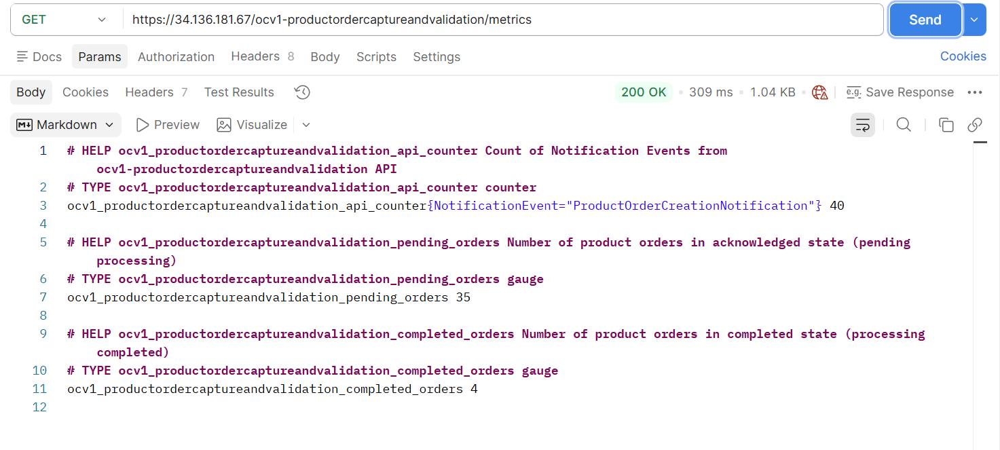

Carbon Management Operator¶
Carbon-Aware Scaling for Kubernetes Workloads on ODA Canvas
A Kubernetes operator that dynamically adjusts workload scaling based on real-time carbon intensity data, enabling ODA Components to minimize their carbon footprint by reducing resource consumption during periods of high-carbon electricity generation. The operator integrates with KEDA (Kubernetes Event-Driven Autoscaler) to automatically manage replica counts based on both workload metrics and carbon intensity forecasts.
Overview¶
The Carbon Management Operator enables carbon-aware computing on the ODA Canvas by automatically adjusting the maximum replica count of workloads based on real-time carbon intensity data from the electrical grid. This approach allows ODA Components to reduce their environmental impact without requiring code changes, by scaling down during periods when the electrical grid relies more heavily on fossil fuels and scaling up when renewable energy sources are more prevalent.
The operator discovers deployments based on label selectors, automatically creates and manages KEDA ScaledObject resources for each discovered deployment, and continuously updates their scaling parameters based on current carbon intensity levels. This design provides a centralized, declarative approach to carbon-aware scaling across multiple workloads within an ODA Component.
This operator follows the Kubernetes Operator Pattern and is part of the ODA Canvas modular architecture.
Key Features¶
Automatic Deployment Discovery: Uses label selectors to discover and manage deployments without manual ScaledObject creation
Dynamic Carbon-Aware Scaling: Adjusts
maxReplicaCountbased on real-time carbon intensity thresholdsTMF628 API Integration: Retrieves carbon intensity forecasts from the TMF628 Performance Management API deployed on the ODA Canvas
One-to-Many Management: Single
CarbonManagementresource manages multiple deployments within an ODA ComponentGitOps Friendly: Deployments self-register via standard Kubernetes labels
Automatic Cleanup: Owner references ensure cascade deletion of managed
ScaledObjectresourcesOrphan Detection: Automatically removes
ScaledObjectresources for deployments that no longer match selectors
Architecture¶
ODA Component (ProductOrderCaptureAndValidation)
├── Deployments (labeled: oda.tmforum.org/componentName, carbon-aware: enabled)
└── Business Metrics → Prometheus (pending_orders, completed_orders)
↓
CarbonManagement Resource (CRD)
├── deploymentSelector (label matching)
├── scaledObjectTemplate (KEDA triggers + Prometheus query)
├── maxReplicasByCarbonIntensity (400→9, 500→5, 550→1 replicas)
└── carbonIntensityForecastDataSource (TMF628 API endpoint)
↓ Reconciles every 5 min
Carbon Management Operator (main.py)
├── 1. Fetch Carbon Intensity (carbon_tmf628_fetcher.py → TMF628 API)
│ Example: 545 gCO2eq/kWh at 08:30 UTC
├── 2. Calculate Max Replicas (max_replica_getter.py)
│ 545 falls in 500-550 range → maxReplicas = 1
├── 3. Discover Deployments (scaled_object_manager.py)
│ Found: ocv1-productorderprocessor
├── 4. Create/Update ScaledObject
│ ocv1-productorderprocessor-carbon-scaled:
│ ├── scaleTargetRef: ocv1-productorderprocessor
│ ├── maxReplicaCount: 1 (carbon-aware limit)
│ └── triggers: Prometheus query (pending_orders > 5)
└── 5. Update Status & Metrics
↓
KEDA (Event-Driven Autoscaler)
├── Polls Prometheus: pending_orders = 50 (exceeds threshold of 5)
├── Calculates desired: ~10 replicas needed for workload
├── Applies carbon limit: maxReplicaCount = 1 (enforced)
└── Creates HPA → Scales to 1 replica (prioritizes carbon reduction)
↓
Kubernetes Deployment
└── Runs 1 pod (reduced capacity during high-carbon period)
↓ Next cycle: intensity drops to 380
Operator Updates → maxReplicas = 9 → KEDA scales to 9 pods
Managed Resources¶
Custom Resources¶
CarbonManagement: Primary resource for configuring carbon-aware scaling
API Group:
oda.tmforum.orgVersion:
v1alpha1Kind:
CarbonManagement
Created Resources¶
The operator creates and manages:
ScaledObject (KEDA): One per discovered deployment, with naming pattern
{deployment-name}-carbon-scaledIncludes KEDA triggers (Prometheus, etc.)
Dynamically adjusted
maxReplicaCountbased on carbon intensityOwner references for automatic cleanup
Labels Added to ScaledObjects¶
carbon-aware.kubernetes.io/managed: "true"- Identifies operator-managed resourcescarbon-aware.kubernetes.io/deployment: "{deployment-name}"- Links to source deployment
Prerequisites¶
Before deploying the Carbon Management Operator, ensure the following components are installed:
1. KEDA (Kubernetes Event-Driven Autoscaler)¶
The operator requires KEDA to manage event-driven autoscaling:
kubectl apply -f https://github.com/kedacore/keda/releases/download/v2.10.0/keda-2.10.0.yaml
Verify KEDA installation:
kubectl get pods -n keda
# Expected: keda-operator and keda-metrics-apiserver pods running
2. Observability Stack (Prometheus and Grafana)¶
The operator and managed workloads require Prometheus for metrics collection. Deploy the ODA Canvas observability stack:
# Deploy observability stack
helm install observability charts/observability-stack -n monitoring --create-namespace
Verify installation:
kubectl get svc -n monitoring
# Expected services:
# - observability-prometheus-prometheus (metrics collection)
# - observability-grafana (visualization)
# - observability-kube-state-metrics (cluster metrics)
# - observability-jaeger-* (distributed tracing)
# - observability-opentelemetry-collector (telemetry)
For complete installation instructions, see charts/observability-stack/README.md.
3. Carbon Intensity Service¶
The operator requires the TMF628-based Carbon Intensity Service for forecast data:
helm install carbon-intensity-service charts/carbon-intensity-service -n canvas
This service provides carbon intensity forecasts via the TMF628 Performance Management API.
Installation¶
Deploy the Custom Resource Definition¶
First, apply the CarbonManagement Custom Resource Definition:
kubectl apply -f ./manifests/carbonmanagemt-crd.yaml
Verify the CRD installation:
kubectl get crd carbonmanagements.oda.tmforum.org
Deploy the Operator¶
Option A: Production Deployment (Using Helm)¶
Deploy the operator to the canvas namespace:
cd ../../../../charts
helm install carbon-management-operator ./carbon-management-operator -n canvas --create-namespace
Verify deployment:
kubectl get deployment carbon-management-operator -n canvas
kubectl get pods -n canvas -l app=carbon-management-operator
Option B: Local Development Mode¶
For development and testing, run the operator locally using Python and KOPF:
# Install dependencies
pip install -r requirements.txt
# Run operator locally (uses kubeconfig for cluster access)
python src/main.py
# Expected output:
# INFO:__main__:Carbon Management Operator started
# INFO:kopf.activities.startup:Activity 'configure' succeeded.
# INFO:kopf.engines.peering:Default peering object is found, leader is...
Usage¶
Step 1: Deploy an ODA Component¶
Deploy an ODA Component that you want to enable carbon-aware scaling for. For example, deploy the Product Order Capture and Validation component:
# Clone the reference components repository
git clone https://github.com/tmforum-oda/reference-example-components.git
cd reference-example-components
# Deploy the component
helm install ocv1 charts/ProductOrderCaptureAndValidation -n components --create-namespace
Verify the component deployment:
kubectl get components -n components
kubectl get deployments -n components
Step 2: Label Deployments for Carbon-Aware Scaling¶
The operator discovers deployments using label selectors. Add labels to the deployments you want to manage:
apiVersion: apps/v1
kind: Deployment
metadata:
name: ocv1-productorderprocessor
namespace: components
labels:
oda.tmforum.org/componentName: ocv1-productordercaptureandvalidation
carbon-aware: enabled # Required for operator discovery
spec:
# ... deployment specification
Important: You can use any label selector strategy that fits your organization’s needs. The operator supports flexible label matching through the deploymentSelector.matchLabels field.
Step 3: Verify ServiceMonitor Configuration¶
Ensure that Prometheus is configured to scrape metrics from your ODA Component:
kubectl get servicemonitor -n components
# Expected: ServiceMonitor for your component
# Example: ocv1-productordercaptureandvalidation-metrics
If metrics are not being collected, verify that the component exposes Prometheus-compatible metrics endpoints.
Step 4: Create a CarbonManagement Resource¶
Create a CarbonManagement resource to configure carbon-aware scaling for your component:
apiVersion: oda.tmforum.org/v1alpha1
kind: CarbonManagement
metadata:
name: productorder
namespace: components
spec:
# Deployment discovery - matches all deployments with these labels
# Note: Replace 'ocv1' with your actual Helm release name
deploymentSelector:
matchLabels:
oda.tmforum.org/componentName: ocv1-productordercaptureandvalidation
carbon-aware: enabled
# ScaledObject template applied to all discovered deployments
scaledObjectTemplate:
pollingInterval: 30 # Check metrics every 30 seconds
cooldownPeriod: 300 # Wait 5 minutes before scaling down (300 seconds)
minReplicaCount: 0 # Allow scaling to zero
maxReplicaCount: 10 # Default maximum replicas
triggers:
- type: prometheus
metadata:
# Note: Replace 'observability-prometheus-prometheus' with your actual Prometheus service name
serverAddress: http://observability-prometheus-prometheus.monitoring.svc:9090
metricName: pending_orders
threshold: '5' # Scale up when pending orders > 5
query: ocv1_productordercaptureandvalidation_pending_orders
# Carbon-aware scaling configuration
maxReplicasByCarbonIntensity:
- carbonIntensityThreshold: 400 # gCO2eq/kWh
maxReplicas: 9
- carbonIntensityThreshold: 500
maxReplicas: 5
- carbonIntensityThreshold: 550
maxReplicas: 1
# Fallback when carbon data unavailable
defaultMaxReplicas: 10
# Carbon intensity data source
carbonIntensityForecastDataSource:
tmf628Api:
url: "http://carbon-intensity-service.canvas.svc.cluster.local/tmf-api/performance/v5"
region: "us-central1-c"
timeout: 10
Apply the resource:
kubectl apply -f ./manifests/productorder-scaler.yaml
Step 5: Verify Operator Functionality¶
Check that the operator discovered deployments and created ScaledObject resources:
# Check CarbonManagement status
kubectl get carbonmanagement productorder -n components
kubectl describe carbonmanagement productorder -n components
# List auto-created ScaledObjects
kubectl get scaledobjects -n components -l carbon-aware.kubernetes.io/managed=true
# Expected output:
# ocv1-productorderprocessor-carbon-scaled
# (one ScaledObject per discovered deployment)
# View ScaledObject details
kubectl describe scaledobject ocv1-productorderprocessor-carbon-scaled -n components
Check operator logs:
kubectl logs -n canvas deployment/carbon-management-operator -f
# Expected log output:
# [INFO] [components/productorder] Reconciling CarbonManagement: productorder
# [INFO] [components/productorder] Using TMF628 carbon forecast API at http://carbon-intensity-service...
# [INFO] [components/productorder] Current carbon intensity: 545.0 at 2026-06-17 08:30:00+00:00
# [INFO] [components/productorder] Calculated max replicas: 2
# [INFO] Discovering deployments with labels: carbon-aware=enabled,oda.tmforum.org/componentName=ocv1-prod...
# [INFO] Discovered deployment: components/ocv1-productorderprocessor
# [INFO] Updated ScaledObject: components/ocv1-productorderprocessor-carbon-scaled (maxReplicas=2)
Step 6: Generate Workload to Trigger Scaling¶
This step is essential to demonstrate the complete carbon-aware scaling behavior. The CarbonManagement resource you created includes a Prometheus trigger based on pending_orders. Creating orders generates the workload metric that drives KEDA autoscaling, allowing you to observe how the operator dynamically limits scaling based on carbon intensity.
Verify Metrics Endpoint is Exposed¶
First, confirm that the ODA Component’s metrics endpoint is accessible:
# List exposed APIs to find the metrics endpoint
kubectl get exposedapis -n components
# Expected output includes:
# NAME URL
# ocv1-productordercaptureandvalidation-metrics https://<external-ip>/ocv1-productordercaptureandvalidation/metrics
Test Metrics Availability¶
Verify that Prometheus can scrape the metrics:
# Get the metrics URL dynamically
METRICS_URL=$(kubectl get exposedapi ocv1-productordercaptureandvalidation-metrics -n components \
-o jsonpath='{.spec.url}')
# Fetch current metrics
curl -k ${METRICS_URL}
# Look for the pending_orders and completed_orders gauges in the output:
# ocv1_productordercaptureandvalidation_pending_orders 0
# ocv1_productordercaptureandvalidation_completed_orders 0
Create Orders Using the Order Creator Script¶
Generate test orders to trigger the scaling behavior:
# Make the script executable
chmod +x ./scripts/order-creator.sh
# Run the script to create orders
./scripts/order-creator.sh
# The script creates multiple orders, increasing the pending_orders metric
The script will:
Send POST requests to the Product Order API
Create orders that enter the processing queue
Increment the
pending_ordersmetricTrigger KEDA scaling when the metric exceeds the threshold (default: 5)
Verify Metrics Update¶
After creating orders, check that the metrics reflect the pending orders:
# Check metrics again
curl -k ${METRICS_URL}
# You should now see increased pending_orders value:
# ocv1_productordercaptureandvalidation_pending_orders 35
# ocv1_productordercaptureandvalidation_completed_orders 4
Example metrics output:

Confirm Prometheus Query Works¶
Verify that the exact Prometheus query used in your KEDA trigger returns data:
# Port-forward to Prometheus
kubectl port-forward -n monitoring svc/observability-prometheus-prometheus 9090:9090 &
# Open browser to http://localhost:9090
# Execute the query from your CarbonManagement resource:
# ocv1_productordercaptureandvalidation_pending_orders
# The query should return the current number of pending orders
This confirms that KEDA can successfully query the metric to make scaling decisions.
Step 7: Observe Carbon-Aware Scaling in Action¶
Now that orders are generating workload, observe how the Carbon Management Operator limits scaling based on carbon intensity:
Monitor Scaling Behavior¶
Watch the deployment scale in real-time:
# Watch pod count change
kubectl get pods -n components -l app=ocv1-productorderprocessor -w
# In another terminal, watch HPA status
kubectl get hpa -n components -w
# View ScaledObject current state
kubectl get scaledobject ocv1-productorderprocessor-carbon-scaled -n components
Check Current Carbon-Aware Limits¶
View the current maxReplicaCount set by the operator based on carbon intensity:
# Get current max replicas
kubectl get scaledobject ocv1-productorderprocessor-carbon-scaled -n components \
-o jsonpath='{.spec.maxReplicaCount}'
# Compare with operator logs to see carbon intensity
kubectl logs -n canvas deployment/carbon-management-operator | grep "Current carbon intensity"
Observe the Complete Behavior¶
Expected Behavior:
Workload Trigger: When
pending_ordersexceeds threshold (e.g., 5), KEDA signals the need to scale upCarbon-Aware Limit: The operator has set
maxReplicaCountbased on current carbon intensity:Low carbon intensity (< 400 gCO2eq/kWh) → Allows up to 9 replicas
Medium carbon intensity (400-500 gCO2eq/kWh) → Limits to 5 replicas
High carbon intensity (500-550 gCO2eq/kWh) → Restricts to 1 replica
Very high carbon intensity (> 550 gCO2eq/kWh) → Uses last threshold (1 replica)
Scaling Result: Pods scale up to process orders, but never exceed the carbon-aware
maxReplicaCountOrder Processing: As orders complete,
pending_ordersdecreasesScale Down: After cooldown period (300 seconds), pods scale down based on reduced workload
Example Scenario:
Current carbon intensity: 545 gCO2eq/kWh → operator sets
maxReplicaCount= 1Pending orders: 50 (well above threshold of 5)
KEDA wants to scale to 10 pods to handle load
Result: Only 1 pod runs due to carbon-aware limit, prioritizing environmental impact
Orders process slower, but carbon footprint is minimized during high-carbon period
Continuous Monitoring¶
Monitor how limits change as carbon intensity fluctuates:
# Watch operator reconciliation (every 5 minutes)
kubectl logs -n canvas deployment/carbon-management-operator -f
# Look for log entries showing:
# [INFO] Current carbon intensity: 545.0 at 2026-06-17 08:30:00+00:00
# [INFO] Calculated max replicas: 1
# [INFO] Updated ScaledObject: components/ocv1-productorderprocessor-carbon-scaled (maxReplicas=1)
As carbon intensity changes throughout the day, the operator automatically adjusts scaling limits, allowing more replicas during cleaner energy periods and restricting them during high-carbon periods.
Configuration Details¶
CarbonManagement Resource Specification¶
Deployment Selection¶
The deploymentSelector field uses standard Kubernetes label matching:
spec:
deploymentSelector:
matchLabels:
# All labels must match for a deployment to be discovered
oda.tmforum.org/componentName: ocv1-productordercaptureandvalidation
carbon-aware: enabled
# Add any additional labels as needed
Best Practices:
Use consistent labels across all deployments in an ODA Component
Include the ODA Component name for organizational clarity
Add a
carbon-aware: enabledlabel to explicitly opt-in to carbon-aware scaling
ScaledObject Template¶
The scaledObjectTemplate defines the KEDA configuration applied to all discovered deployments:
spec:
scaledObjectTemplate:
pollingInterval: 30 # How often to check trigger metrics (seconds)
cooldownPeriod: 300 # Cooldown after scaling down (seconds)
minReplicaCount: 0 # Minimum replicas (0 allows scale-to-zero)
maxReplicaCount: 10 # Initial maximum replicas (overridden by carbon intensity)
triggers: # KEDA triggers (Prometheus, CPU, memory, etc.)
- type: prometheus
metadata:
serverAddress: http://observability-prometheus-prometheus.monitoring.svc:9090
metricName: pending_orders
threshold: '5'
query: ocv1_productordercaptureandvalidation_pending_orders
Important: The maxReplicaCount in the template serves as the default. The operator dynamically adjusts this value based on carbon intensity thresholds.
Carbon Intensity Thresholds¶
Define how maximum replicas should adjust based on carbon intensity:
spec:
maxReplicasByCarbonIntensity:
- carbonIntensityThreshold: 400 # When intensity <= 400 gCO2eq/kWh
maxReplicas: 9 # Allow up to 9 replicas
- carbonIntensityThreshold: 500 # When 400 < intensity <= 500 gCO2eq/kWh
maxReplicas: 5 # Limit to 5 replicas
- carbonIntensityThreshold: 550 # When 500 < intensity <= 550 gCO2eq/kWh
maxReplicas: 1 # Severely restrict to 1 replica
Behavior: The operator evaluates thresholds as upper bounds (inclusive). It finds which range the current carbon intensity falls into:
If intensity ≤ first threshold → use first config’s
maxReplicasIf previous threshold < intensity ≤ current threshold → use current config’s
maxReplicasIf intensity > all thresholds → use last config’s
maxReplicasIf forecast data is unavailable → use
defaultMaxReplicas
Example: With the configuration above:
Intensity = 350 → maxReplicas = 9
Intensity = 450 → maxReplicas = 5
Intensity = 540 → maxReplicas = 1
Intensity = 600 → maxReplicas = 1 (last config applies)
Forecast unavailable → maxReplicas = 10 (defaultMaxReplicas)
Carbon Intensity Data Source¶
Configure the TMF628 API endpoint for carbon intensity forecasts:
spec:
carbonIntensityForecastDataSource:
tmf628Api:
url: "http://carbon-intensity-service.canvas.svc.cluster.local/tmf-api/performance/v5"
region: "us-central1-c" # Cloud region identifier
timeout: 10 # API request timeout (seconds)
Note: Replace the region value with the actual region where your workloads are running. The region identifier should match what the TMF628 API expects.
Status and Monitoring¶
CarbonManagement Status Fields¶
The operator provides detailed status information in the CarbonManagement resource:
status:
deploymentsDiscovered: 3 # Number of deployments matching selector
scaledObjectsManaged: 3 # Number of ScaledObjects successfully created
scaledObjectsFailed: 0 # Number of ScaledObjects with errors
conditions:
- type: OperatorDegraded
status: "False" # "False" means operator is working correctly
reason: Succeeded
message: Successfully managing 3 ScaledObjects with eco mode enabled
lastTransitionTime: "2026-06-17T08:30:00Z"
Status Interpretation:
OperatorDegraded=False: Operator functioning correctlyOperatorDegraded=True: Checkreasonandmessagefor error detailsdeploymentsDiscovered > scaledObjectsManaged: Some deployments failed ScaledObject creation
Viewing Operator Status¶
# Check overall status
kubectl get carbonmanagement productorder -n components -o yaml
# Check specific status fields
kubectl get carbonmanagement productorder -n components \
-o jsonpath='{.status.conditions[0]}' | jq
# View discovered deployments
kubectl get carbonmanagement productorder -n components \
-o jsonpath='{.status.deploymentsDiscovered}'
Automatic Resource Management¶
Owner References and Cascade Deletion¶
All ScaledObject resources created by the operator include owner references to their parent CarbonManagement resource:
apiVersion: keda.sh/v1alpha1
kind: ScaledObject
metadata:
name: ocv1-productorderprocessor-carbon-scaled
namespace: components
ownerReferences:
- apiVersion: oda.tmforum.org/v1alpha1
blockOwnerDeletion: true
controller: true
kind: CarbonManagement
name: productorder
uid: 01c54148-055d-4abf-aed3-cf51e89acbc4
spec:
# ... ScaledObject specification
Benefit: Deleting the CarbonManagement resource automatically deletes all managed ScaledObject resources through Kubernetes garbage collection:
# This removes the CarbonManagement AND all its ScaledObjects
kubectl delete carbonmanagement productorder -n components
Orphan Cleanup¶
The operator automatically removes ScaledObject resources for deployments that no longer match the selector:
Cleanup Scenarios:
Deployment labels changed → ScaledObject deleted
Deployment deleted → ScaledObject deleted
Selector updated to exclude deployment → ScaledObject deleted
Verification:
# List all managed ScaledObjects
kubectl get scaledobjects -n components \
-l carbon-aware.kubernetes.io/managed=true
# Check operator logs for cleanup operations
kubectl logs -n canvas deployment/carbon-management-operator | grep cleanup
Troubleshooting¶
No Deployments Discovered¶
Problem: CarbonManagement resource shows deploymentsDiscovered: 0
Solutions:
Verify deployment labels match selector:
# Check deployment labels
kubectl get deployments -n components --show-labels
# Check CarbonManagement selector
kubectl get carbonmanagement -n components -o yaml | grep -A 5 deploymentSelector
Ensure deployments exist in the same namespace as the
CarbonManagementresourceCheck operator logs for discovery errors:
kubectl logs -n canvas deployment/carbon-management-operator | grep "Discovering deployments"
ScaledObjects Not Created¶
Problem: Deployments discovered but ScaledObject resources not created
Solutions:
Check KEDA installation:
kubectl get pods -n keda
# Ensure keda-operator is running
Review operator logs for errors:
kubectl logs -n canvas deployment/carbon-management-operator | grep -i error
Verify CRD installation:
kubectl get crd scaledobjects.keda.sh
Carbon Intensity Data Not Retrieved¶
Problem: Operator logs show errors fetching carbon intensity data
Solutions:
Verify Carbon Intensity Service is running:
kubectl get pods -n canvas -l app=carbon-intensity-service
kubectl get svc carbon-intensity-service -n canvas
Test API endpoint manually:
kubectl run -it --rm debug --image=curlimages/curl --restart=Never -- \
curl http://carbon-intensity-service.canvas.svc.cluster.local/tmf-api/performance/v5/performanceIndicatorSpecification
Check region configuration matches API expectations
Review timeout settings if API is slow
Scaling Not Happening¶
Problem: ScaledObject created but pods not scaling
Solutions:
Check HPA status (created by KEDA):
kubectl get hpa -n components
kubectl describe hpa keda-hpa-{deployment}-carbon-scaled -n components
Verify Prometheus metrics are available:
# Check if metric query returns data
kubectl port-forward -n monitoring svc/observability-prometheus-prometheus 9090:9090
# Visit http://localhost:9090 and run the query from your scaledObjectTemplate
Check KEDA operator logs:
kubectl logs -n keda deployment/keda-operator
Verify deployment has sufficient resources to scale
Operator Not Starting¶
Problem: Operator pod fails to start or crashloops
Solutions:
Check pod logs:
kubectl logs -n canvas deployment/carbon-management-operator
Verify RBAC permissions:
kubectl get clusterrole carbon-management-operator
kubectl get clusterrolebinding carbon-management-operator
Check CRD installation:
kubectl get crd carbonmanagements.oda.tmforum.org
Ensure dependencies are met (Python packages, etc.)
Reference Implementation¶
Technology Stack¶
Language: Python 3.9+
Framework: KOPF (Kubernetes Operator Framework)
Dependencies:
kubernetes- Kubernetes Python clientkopf- Operator frameworkrequests- HTTP client for TMF628 APIpydantic- Data validation
Key Files¶
File |
Purpose |
|---|---|
|
Main operator entry point |
|
Pydantic data models for CRDs |
|
TMF628 API client |
|
Carbon forecast abstraction |
|
Carbon intensity calculation logic |
|
ScaledObject lifecycle management |
|
Prometheus metrics |
|
Utility functions |
|
CRD definition |
|
Example CarbonManagement resource |
|
Test workload generator |
|
Python dependencies |
|
Container image definition |
Reconciliation Loop¶
The operator executes a reconciliation loop every 5 minutes:
Fetch Carbon Intensity: Query TMF628 API for current carbon intensity
Calculate Max Replicas: Apply threshold rules to determine appropriate
maxReplicaCountDiscover Deployments: Find all deployments matching
deploymentSelectorCreate/Update ScaledObjects: Ensure each deployment has a
ScaledObjectwith correct settingsClean Up Orphans: Remove
ScaledObjectsfor deployments no longer matching selectorUpdate Status: Write status information back to
CarbonManagementresource
Development¶
Local Development Setup¶
Clone the repository:
git clone https://github.com/tmforum-oda/oda-canvas.git
cd oda-canvas/source/operators/TMFOP011-Carbon-Management/carbon-management
Install Python dependencies:
pip install -r requirements.txt
Configure
kubectlto access your test cluster:
# Verify connectivity
kubectl cluster-info
kubectl get nodes
Deploy prerequisites (KEDA, Observability Stack, Carbon Intensity Service)
Apply CRD:
kubectl apply -f ./manifests/carbonmanagemt-crd.yaml
Interactive Development and Testing¶
Run the operator locally in standalone mode:
kopf run --namespace=components --standalone ./src/main.py --verbose
Benefits of Standalone Mode:
Fast iteration without building container images
Direct access to logs and debugger
Uses local
kubeconfigfor cluster accessEasy testing of code changes
Important: Stop the in-cluster operator to avoid conflicts:
kubectl scale deployment carbon-management-operator -n canvas --replicas=0
Debugging¶
Enable verbose logging:
export LOG_LEVEL=DEBUG
kopf run --verbose --namespace=components --standalone ./main.py
Common debugging commands:
# Watch operator reconciliation
kubectl logs -n canvas deployment/carbon-management-operator -f
# Check CarbonManagement resource
kubectl describe carbonmanagement -n components
# List managed ScaledObjects
kubectl get scaledobjects -n components -l carbon-aware.kubernetes.io/managed=true
# Check KEDA HPA
kubectl get hpa -n components
# View Kubernetes events
kubectl get events -n components --sort-by='.lastTimestamp'
Build automation and versioning¶
The build and release process for docker images is described here: /docs/developer/work-with-dockerimages.md
Cleanup¶
Remove CarbonManagement Resources¶
Delete a specific CarbonManagement resource (automatically removes managed ScaledObject resources):
kubectl delete carbonmanagement productorder -n components
Remove Test Components¶
# Remove ODA Component
helm uninstall ocv1 -n components
Uninstall Operator¶
# Using Helm
helm uninstall carbon-management-operator -n canvas
Remove CRD¶
Warning: This will delete all CarbonManagement resources in the cluster.
kubectl delete crd carbonmanagements.oda.tmforum.org
Uninstall Prerequisites¶
# Remove KEDA
kubectl delete -f https://github.com/kedacore/keda/releases/download/v2.10.0/keda-2.10.0.yaml
# Remove observability stack
helm uninstall observability -n monitoring
# Remove carbon intensity service
helm uninstall carbon-intensity-service -n canvas